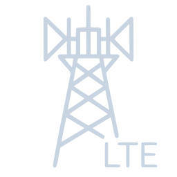
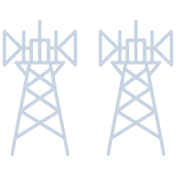
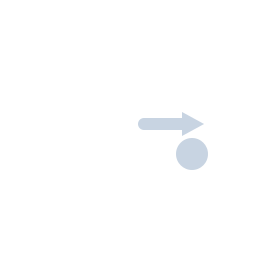
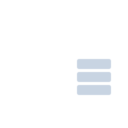
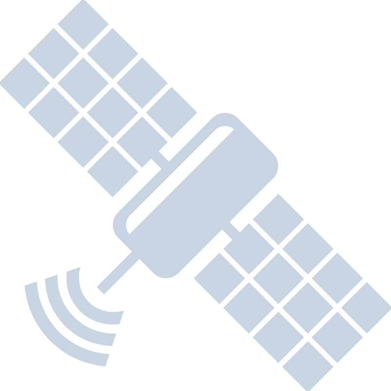
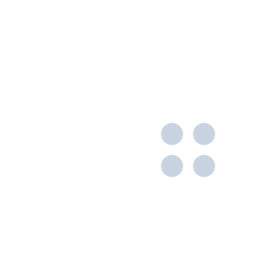
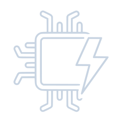
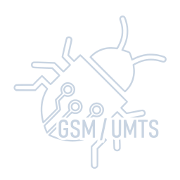
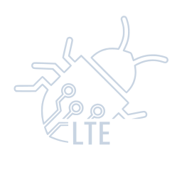
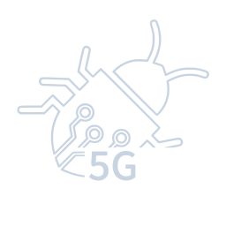

TOOLKIT REFERENCE / 01
Modules.
A field guide to the scripts behind the interface. Explore the toolkit by layer, then go to the source for the details.
Radio access, core networks, identity and capture analysis.
Open the full module indexEarly development. No module has been tested against a real radio. Over-the-air paths are written and reviewed, not radio-tested. A module name or a planned operation is not proof of an end-to-end result. Read what actually works ↗
THE DIRECTORY / ALL 63 MODULES
Find your starting point.
Every launcher module is listed below. Each link opens the module’s source; the generated index also lists its verbs.
Prepare & survey
Check the environment, manage radio devices and collect survey context.
00_depsDependency ManagerInspect the installed toolchain and missing components.↗01_radioSDR / Radio ManagerDevice enumeration, capability checks and IQ recording.↗02_cell_reconCell ReconCell survey and neighbour discovery across GSM, LTE and NR.↗03_gsmtapGSMTAP Live FeedListen to, read and decode GSMTAP traffic from an upstream source.↗04_tower_mapTower SurveyGPS-tagged surveys and CSV, KML or GeoJSON export.↗05_field_kitField KitRadio pre-flight checks, capability detection and synthetic GSMTAP.↗25_killchainCellular KillchainCompose repeatable module runs from chain files and record their results.↗59_remote_nodeRemote NodesRegister nodes, inspect capabilities and collect observations.↗
Air interface & access
Protocol tools and assessment paths across cellular generations and their edges.
06_gsm_airGSM AirSystem information, paging and identity exposure analysis.↗07_gsm_attackGSM CatcherGSM identity-catcher sequences, downgrade and key-recovery tooling.↗08_umts_airUMTS AirUTRAN decoding and message and waveform construction; no complete uplink response loop.↗
10_lte_airLTE Air InterfaceMIB/SIB decoding, RRC builders and eNB orchestration.↗12_nr_air5G NR Air InterfaceSSB, MIB and SIB1, PRACH and gNB configuration.↗
57_evil_twinLTE / NR Evil TwinBuild and prepare a cell from survey data and collect run evidence.↗15_downgradeDowngrade AttacksReject causes, cipher choices and downgrade detection.↗
09_lte_attachLTE Attach ForgeNAS encode/decode, attach messages and identity-exposure checks.↗
34_slicingNetwork SlicingSlice selection, isolation checks and URSP policy auditing.↗45_iotNB-IoTNarrowband system information, attach and non-IP data paths.↗50_gprsGPRS / EDGEPacket data, GEA ciphering, APN coding and PDP contexts.↗60_overshadowOvershadowing / AdaptOverSubframe mapping, timing and power budgets, and detection.↗51_sidelinkNR Sidelink / V2XPC5 resource pools, sidelink control information and relay checks.↗
49_ntn5G NTN / SatelliteNon-terrestrial Doppler, delay and system-information fields.↗53_non3gppTETRA / DMR / GSM-RLand-mobile radio structures, ciphers and band classification.↗33_jamming_detectJammingInterference detection and measurement, plus waveform construction.↗36_vowifiVoWiFi / ePDGIKEv2, EAP-AKA and encryption and integrity transform audits.↗37_femtocellSmall Cell / eNBSmall-cell configuration, backhaul and management assessment.↗
38_ussdUSSD ForgeUSSD/MMI parsing, 7-bit packing and injection detection.↗43_ran_shareRAN SharingPLMN coding, shared-network classification and identity leakage checks.↗47_wifioffWi-Fi Offload / LWAePDG discovery, EAP exchanges and certificate assertions.↗
Beyond the air
Follow signalling and user traffic through core and interconnect interfaces.
11_lte_coreLTE Core / EPCDiameter, GTP and S1AP message tools.↗13_nr_core5G Core / SBANGAP, PFCP and service-based architecture assessment.↗26_ss7_mapSS7 / MAPMAP operations, signalling decoders and dialogue pairing.↗30_volte_imsVoLTE / IMSSIP, media and cipher-reuse analysis.↗62_gtpuGTP-U User PlaneBuild and parse GTP-U traffic and examine user-plane paths.↗27_cellular_dnsCellular DNSDNS message codecs, redirection sequences and tampering detection.↗32_nas_signalingNAS SignallingProcedure and rate analysis, plus pre-authentication message builders.↗40_sba_pivot5G SBA PivotHTTP/2 SBI framing, NRF discovery and OAuth2 token audits.↗48_oranO-RAN / xAppsO-RAN interfaces, deployment assessment and xApp-authority modelling.↗42_li_probeLawful InterceptionInterception interface analysis and probe tooling.↗44_carrier_apiCarrier APICarrier API request tooling and security assessment.↗
Subscribers & cards
Inspect identity formats, SIM procedures and exposure in captures.
14_suciSUCIConcealment, de-concealment and structural linkability analysis.↗16_simSIM / eSIMAuthentication, card files, OTA parsing and profile tools.↗18_imsi_exposureIMSI ExposureIdentity extraction and correlation over a capture.↗31_sim_defenseSIM Swap DefenceRisk signals, scoring and swap artefacts.↗58_suci_catcher5G SUCI CatcherPre-authentication identity-capture planning, gNB and AMF configuration.↗41_ota_smsOTA Binary SMSOTA command-packet construction and SPI, counter and key audits.↗52_stkSIM ToolkitBuild, parse and audit proactive SIM Toolkit commands.↗
Read the evidence
Work with captures, cipher choices, traffic and location estimates.
17_pcap_analysisCapture AnalysisRead and summarise pcap traffic across cellular protocols.↗19_cipher_auditCipher AuditReview negotiated ciphers and check for downgrade patterns.↗23_traffic_analysisTraffic AnalysisFlow features, classification and call records.↗39_ta_geolocTiming-Advance GeolocationRange estimation and multi-cell trilateration.↗61_gnssGNSS / GPSNMEA and UBX parsing, GPSD trust and spoofing checks.↗24_rf_fingerprintRF Fingerprint / CSIIQ signal fingerprints and channel-state information extraction.↗28_paging_trackPaging / TorpedoPaging occasion calculations, capture analysis and tracking models.↗46_lppLPP PositioningLTE Positioning Protocol codecs, procedures and forgery detection.↗29_mac_layerMAC / RLC AnalysisExamine MAC and RLC layer traffic and protocol structures.↗
Device surfaces & catalogues
Explore baseband tooling and vulnerability catalogues without mistaking a catalogue for an exploit.
35_basebandBaseband FuzzingMutation, corpus generation, DIAG framing and crash triage.↗
54_baseband_exploitBaseband ExploitsMalformed PDU construction, control-plane forgery and CVE catalogue.↗55_nr_inject5G NR InjectionRNTI tracking, MAC-NR framing, descrambling and injection tooling.↗56_baseband_diagBaseband DIAGQualcomm DIAG framing, NV items and EFS paths.↗
20_gsm_cveGSM / UMTS CVE KitCatalogue and reachability checks; no exploit primitives shipped.↗
21_lte_cveLTE CVE KitCatalogue, message families and reachability checks; no exploit primitives shipped.↗
22_nr_cve5G CVE KitNR and SBA catalogue with probes and named handoffs; no exploit primitives shipped.↗
USAGE / FROM THE PROJECT ROOT
Go to the source.
Modules are standalone scripts. Use their help and status output to understand what an operation does and what it needs. A missing observation is not a clean result.
# List the modules and their index
./imsisting.sh --list
./imsisting.sh --index
# Inspect one module
bash modules/02_cell_recon.sh --help
bash modules/02_cell_recon.sh --status-tsv